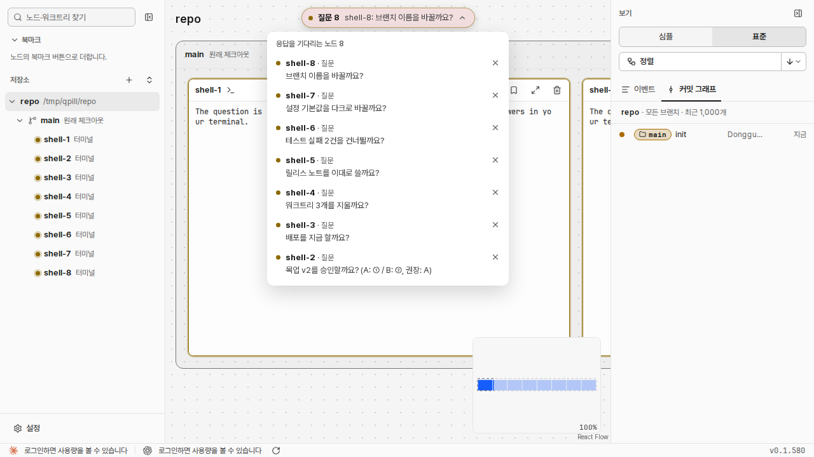

질문 1
repo
main 원래 체크아웃
shell-1응답 대기
The question is in the human's inbox.
사람 지시: 「알약 펼치지 않고도 클릭시 바로 해당 터미널로 이동했으면 좋겠고, 질문이 여러개 쌓일때의 예시도 보여줬으면 한다.」 두 안 모두 알약을 한 번 누르면 그 노드로 가서 카드를 고른다. 점선이 바뀌는 곳이다.

| 안 | 좋은 점 | 약한 점 |
|---|---|---|
| ① 알약 하나 + [▾] (승인) | 질문이 몇 개든 모양이 같다. 질문 글이 길게 보인다. 한 번 누르면 바로 가고, 답하면 다음 질문이 온다. | 둘째 질문부터는 [▾]를 눌러야 보인다. |
| ② 알약 여러 개 + [+N] | 3개까지는 한 번 누르면 어느 노드로든 간다. | 질문 글이 짧게 잘린다. 그래프 위쪽을 더 덮는다. 수에 따라 모양이 바뀐다. |